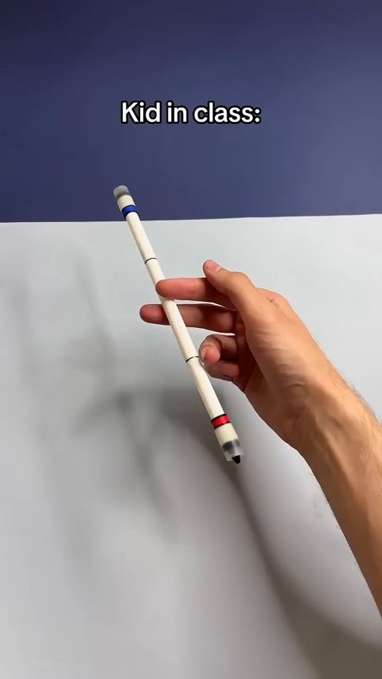
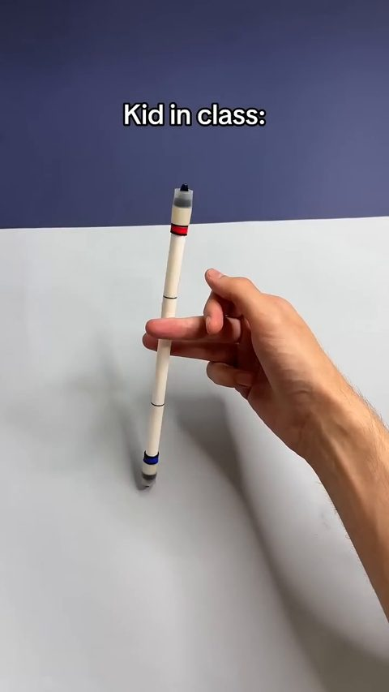
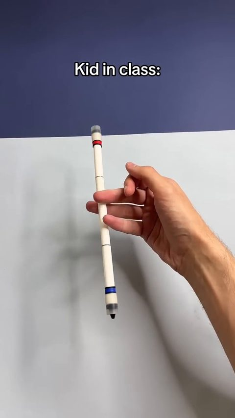
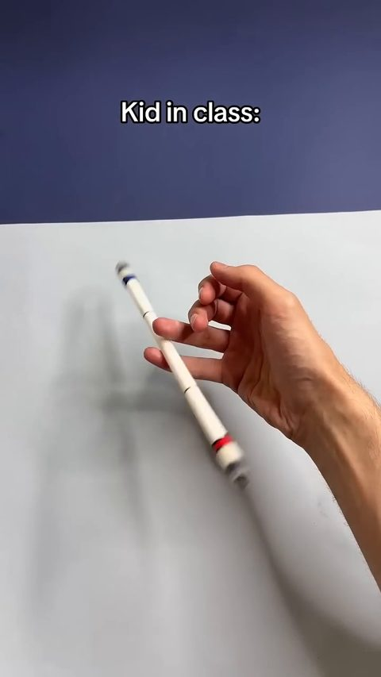
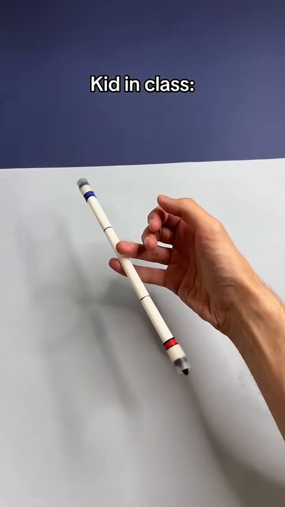
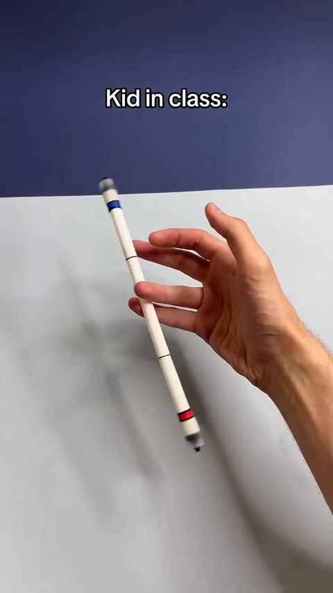
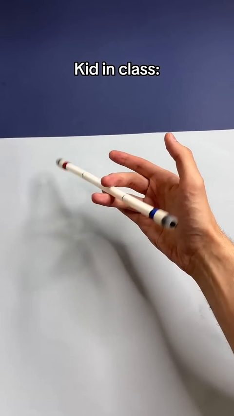
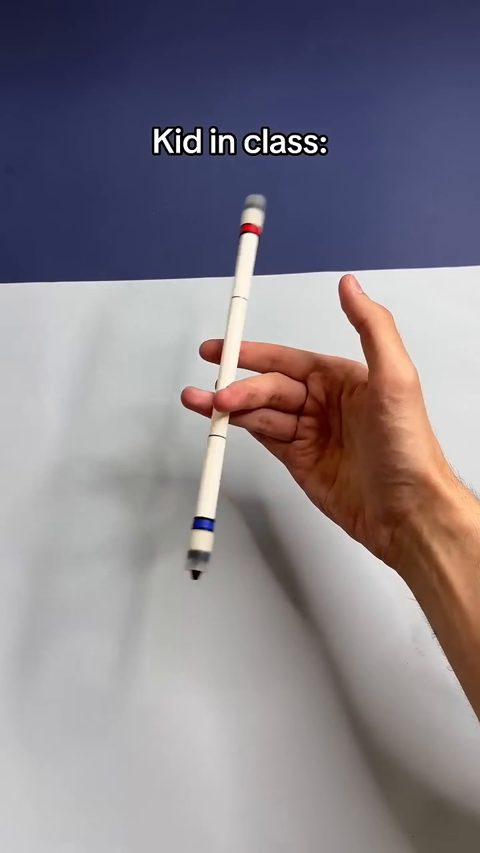
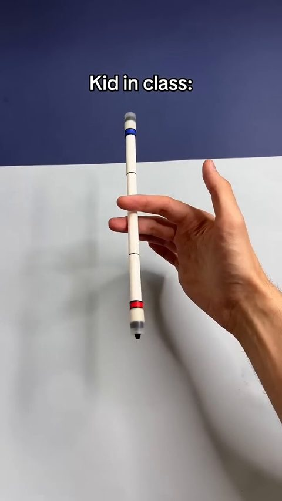

Pen Spinning
Spin a pen end over end around the fingers for three full counterclockwise revolutions, then hold it.

Target environment at episode start (two fixed camera views; the same views as the feedback videos)
Task
Task: Pen Spinning
Your goal is to reproduce the dexterous manipulation skill demonstrated in the given human video using the Wuji Hand 2 in simulation and successfully execute it in the provided target environment.
The task is to spin a pen end over end around the fingers, counterclockwise viewed from above, for three full revolutions, keep it in the hand throughout, and hold it at rest.
Rotation is the heading of the pen (back end to red tip) about the world vertical axis; rotating the pen about its own long axis does not count.
- Human video:
demo/ - Target environment:
target/screenshot.png - Success criteria:
SUCCESS.md
Success criteria and progress rubric
Success Criteria: Pen Spinning
Complete all stages in order within 12 s (6000 steps at 500 Hz). Total progress score: 0–1.
Rotation is the signed cumulative change of the pen's heading (the direction from its back end to its red tip, projected on the horizontal plane) about world +Z, measured from step 0. Counterclockwise from above is positive; clockwise motion subtracts. Rotation of the pen about its own long axis does not change the heading and does not count.
1. Spin-up (0–0.30)
- 0: Heading rotation < 90°, or the pen is lost before reaching it.
- 0.10: Net rotation ≥ 90°.
- 0.20: Net rotation ≥ 180°.
- 0.30: First revolution: net rotation reaches +360° within 3.0 s of step 0.
2. Sustain (0–0.45)
- 0: First revolution not completed.
- 0.15: Net rotation ≥ +540°.
- 0.25: Second revolution: +720° reached within 3.0 s of the first.
- 0.35: Net rotation ≥ +900°.
- 0.45: Third revolution: +1080° reached within 3.0 s of the second.
3. Hold (0–0.25)
- 0: Third revolution incomplete, or the pen not retained.
- 0.10: After +1080°, the pen touches the hand with centre speed < 0.02 m/s and angular speed < 0.5 rad/s for ≥ 0.25 s.
- 0.15: The same throughout the final 0.5 s.
- 0.25: Throughout the final 1.0 s: net rotation ≥ +1080° (the third revolution is never undone), centre speed < 0.02 m/s, angular speed < 0.5 rad/s, and hand contact at every step.
All milestones require the pen retained up to that moment: it touches nothing but the hand, contact interruptions < 0.10 s, its centre stays within 8 cm horizontally of its step-0 position and never drops more than 3 cm below it, and its long axis never tilts more than 45° from horizontal.
Scoring: Award the highest satisfied milestone per stage. Later-stage scores require full completion of preceding stages. Back-and-forth motion nets to zero; a revolution that takes longer than 3.0 s after the previous one does not count toward the next milestone.
Official success: Score = 1.0, with all physical, hardware, and runtime requirements satisfied in every required evaluation trial.
Demonstration frames









Documentation
Agent
● Pen Spinning paused
- Research time
- 9h 46m elapsed · 8h 17m active measured
- Submissions
- 12 / 100 measured
- Simulator
- MuJoCo Warp from agent log
- Methods
- CMA-ESCEMtrajectory optimizationPPOteacher-student distillationdomain randomizationbehavior cloningsystem identification
- Task progress
- agent-estimated 0.00 (s02)
Target status unchanged:9 submissions used,91 remaining; s09 is latest; no verified target90degree milestone or full-task success. Preserve budget until a useful locally validated candidate is ready.
Task progress
Only numeric estimates the agent wrote in its own log; SuperDex reports no scores, and official verdicts are not shown.
The agent has not stated a numeric estimate yet.
| Trial | Score | Time | Agent's statement |
|---|---|---|---|
| s02 | 0.00 | – | Fresh submission s02 (second global submission) completed. Video: visibly stationary pen retained throughout 12 s; no spin. Estimated progress 0. Joint logs max absolute velocity 0.23 rad/s including encoder noise. |
Experiments: local simulation vs SuperDex
One card per SuperDex submission. Left: the same submitted package in the agent's own training simulator (matched by package hash). Right: what SuperDex returned. Summaries follow Hypothesis → Changes → Observed, with local-simulation and SuperDex observations kept separate; they are curated from the agent's own logs and package changes.
Best so far (agent's own judgement): s10 — study_r3/state.json strategy: "Test short-horizon image-estimated continuation of measured best s10 prefix"; LOG: s10 stereo peak ~97 deg before reversal (highest image-estimated target heading; no verified milestone or task success in any trial).
| Trial | Submitted (EDT) | Type | What changed | Agent est. | Videos |
|---|---|---|---|---|---|
| s01 | 15:55 | baseline | other | – | paired |
| s02 | 16:11 | baseline | other | 0.00 | paired |
| s03 | 16:18 | policy improvement | controller / trajectory, optimization method, safety governor | – | paired |
| s04 | 16:34 | policy improvement | controller / trajectory, optimization method, physics / contact model | – | paired |
| s05 | 16:49 | diagnostic probe | system identification | – | paired |
| s06 | 17:02 | policy improvement | initial-state estimation, controller / trajectory, domain randomization | – | paired |
| s07 | 19:50 | policy improvement | controller / trajectory, safety governor, optimization method | – | paired |
| s08 | 19:56 | policy improvement | safety governor, controller / trajectory | – | paired |
| s09 | 20:05 | diagnostic probe | safety governor, controller / trajectory | – | paired |
| s10 ★ | 21:46 | diagnostic probe | physics / contact model, system identification, controller / trajectory | – | paired |
| s11 | 23:37 | diagnostic probe | physics / contact model, controller / trajectory, safety governor | – | paired |
| s12 | 00:09 | policy improvement | controller / trajectory, initial-state estimation, physics / contact model | – | paired |
s01 · submitted 2026-10-21 15:55 EDT baseline
- Hypothesis
- First (research-era) session: establish the submission/feedback pipeline before any learning; plan was a privileged sim teacher distilled into a proprioceptive policy.
- Changes
- Submitted the unmodified example hold package (holds prev_q_target[-1] = start pose for 12 s, no velocity target).
- Observed local sim
- Agent recorded only a settled local hold state (research/local_hold.npz); no local metrics in the log. Re-run in research/model.py: hand holds still, pen drops ~34 mm onto the fingers, stays resting there with ~8 deg yaw drift over 12 s.
- Observed SuperDex, agent's analysis
- Not recorded: the research-era LOG.md has no entry after submission, and the later study_r3 session states it did not inspect prior results.
- Unverified
- SuperDex outcome of s01 as seen by the agent; exact local scene used for the s01-era hold check.
Task progress: agent-estimated none stated
How this simulation video was made: APPROXIMATE re-creation: exact hold package run for 6000 steps in the research-era model, but the agent's own s01-era local hold state (research/local_hold.npz) is NOT reproduced (closest max state diff 0.23; model.py was modified after that file was written). Treat as illustrative of the research-era model, not as the agent's validation rollout.
Differences from the SuperDex trial: Local MuJoCo approximation built by the agent from public URDF/meshes, not the SuperDex simulator/hardware; explicit PD torque model at 1 kHz; capsule pen 10 g; camera views are free MuJoCo cameras, not the SuperDex cameras. Initial pen placement is an unvalidated default guess (pen drops ~34 mm into the palm at start); s01-era scene not recoverable.
Model: research/model.py build() defaults (built-in PD position actuators, friction 0.8, no hand self-collision, solver Newton 15 it) · initial state: research/model.py initial(): pen at (-0.122,-0.010,0.325) m, horizontal, unsettled; hand at q0 · noise: off (no encoder noise; hold policy ignores observations) · 6000 steps · 12 s
s02 · submitted 2026-10-21 16:11 EDT baseline
- Hypothesis
- A fresh hold baseline from the restarted study gives a clean reference of target joint tracking and pen resting behaviour.
- Changes
- Same example hold policy as s01 (identical policy.py); manifest renamed independent_hold_baseline.
- Observed local sim
- Agent: 'Native local hold steady joint angles differ from remote steady angles by order 1e-4 rad'. Re-run: pen retained 12 s, heading change -0.6 deg, max speed ratio 0.0001.
- Observed SuperDex, agent's analysis
- Agent: 'visibly stationary pen retained throughout 12 s; no spin. Estimated progress 0.'
- Unverified
- No saved agent rollout of this package exists, so the re-run cannot be compared bit-for-bit; the pre-20:22 model is a reconstruction (see sim_video).
- Failure
- No spin (expected for a hold baseline); joint log max |v| 0.23 rad/s including encoder noise.
- Next
- Build native trajectory search with joint-speed and retention constraints ("Local trajectory search").
Task progress: agent-estimated 0.00 “Estimated progress 0.”
How this simulation video was made: Generated: exact package re-run in the reconstructed pre-20:22 model. Existing study_r3/local_hold.mp4 was NOT used: it was rendered by sim.py __main__ stepping q0 directly for 3 s (no package code, no settle), not a rollout of this package.
Differences from the SuperDex trial: Local MuJoCo approximation built by the agent from public URDF/meshes, not the SuperDex simulator/hardware; explicit PD torque model at 1 kHz; capsule pen 10 g; camera views are free MuJoCo cameras, not the SuperDex cameras. Pen pose uncalibrated guess; friction 0.8 / solref 0.004 defaults; no encoder noise.
Model: Reconstructed original study_r3 model: study_r3/hand.xml with hand geoms conaffinity 3->2 (no hand-hand collisions). The agent rebuilt hand.xml at 20:22 (after… · initial state: eval_policy.py default reset: pen centre guessed at (-0.105,-0.012,0.307) m, horizontal, heading 90 deg, settled 0.5 s under q0 hold (uncalibrated guess from screenshot) · noise: off (NOISE=0) · 6000 steps · 12 s
s03 · submitted 2026-10-21 16:18 EDT policy improvement
- Hypothesis
- A CMA-ES-optimised open-loop joint-keyframe trajectory with joint-speed and retention penalties can give partial positive rotation on target.
- Changes
- New package trajectory_v1_speed_reflex: replays a 500 Hz optimised target table from step 250, with target slew limit at 80% motor speed and damping reflex above 75% measured speed.
- Observed local sim
- Agent: 'Exact local replay: max joint speed / limit = 0.787. Retention constraints first fail at 2.942 s, with maximum retained heading approximately +132 degrees'. Re-run reproduces 2.942 s / 132.3 deg / 0.787 exactly. (Agent's post-hoc 20:22 re-evaluation in the revised inter-finger-collision model: max retained 39 deg, pen lost.)
- Observed SuperDex, agent's analysis
- Agent: 'motion initially rotates slightly clockwise, followed by a rapid partial counterclockwise sweep and loss before a complete revolution'; pinky abduction 10.385 rad/s > 8.11 limit, 'not hardware-compliant'.
- Failure
- Partial CCW sweep then pen lost before a full revolution; speed-limit violation on pinky abduction; 'No verified score is assigned.'
- Next
- Optimizer must include the deployed controller inside simulation; add inter-finger collisions; contact identification against returned q_target/q.
Task progress: agent-estimated none stated
How this simulation video was made: Generated: exact package re-run; reconstructed pre-submission model reproduces the agent's logged pre-submit replay (retention fail 2.942 s, +132 deg, speed ratio 0.787). Model is a reconstruction (the original hand.xml was overwritten at 20:22), matched by outcome, not by file hash.
Differences from the SuperDex trial: Local MuJoCo approximation built by the agent from public URDF/meshes, not the SuperDex simulator/hardware; explicit PD torque model at 1 kHz; capsule pen 10 g; camera views are free MuJoCo cameras, not the SuperDex cameras. No hand self-collision (later found to matter); uncalibrated pen pose; no encoder noise.
Model: Reconstructed original study_r3 model (hand.xml with hand-hand collisions disabled, conaffinity 3->2); friction 0.8, solref 0.004 · initial state: eval_policy.py default reset: pen centre guessed at (-0.105,-0.012,0.307) m, horizontal, heading 90 deg, settled 0.5 s under q0 hold (uncalibrated guess from screenshot) · noise: off (NOISE=0) · 6000 steps · 12 s
s04 · submitted 2026-10-21 16:34 EDT policy improvement
- Hypothesis
- Optimising the trajectory with the deployed controller inside a native 1 kHz MuJoCo rollout (and with inter-finger collisions) will transfer better than s03.
- Changes
- New package: native-search candidate (small weights.npz + policy) from the exact-controller native optimizer; submitted the 'earlier robust partial candidate'.
- Observed local sim
- Re-run (= agent's saved candidate_native1 rollout, bit-identical): +90 at 2.377 s, +180 at 2.48 s, max retained 357.1 deg, retention fails 2.673 s, speed ratio 0.826. Agent: 'Noise tests ... 16/16 local trials reached +180 degrees retained, no full turns; max joint speed ratio 0.912.'
- Observed SuperDex, agent's analysis
- Agent: robot tracking improved (joint RMS 0.002-0.008 rad, speeds within limits) but pen behaviour differs; later stereo shows tilt ~51-70 deg at 0.9-0.95 s, 'failure to reproduce the required horizontal, retained skill'.
- Failure
- Pen tipped out of the palm plane around 0.9-1.0 s; no positive-rotation milestone verified.
- Next
- Fit the initial pen pose from video; gentle contact-identification probe; stereo reconstruction of the start state.
Task progress: agent-estimated none stated
How this simulation video was made: Generated: exact package re-run; bit-identical (max abs diff 0.0 over 12000 ticks) to the agent's saved validation rollout study_r3/candidate_native1/local_evaluation.npz.
Differences from the SuperDex trial: Local MuJoCo approximation built by the agent from public URDF/meshes, not the SuperDex simulator/hardware; explicit PD torque model at 1 kHz; capsule pen 10 g; camera views are free MuJoCo cameras, not the SuperDex cameras. Uncalibrated pen start pose (agent later found initial geometry the leading mismatch); fixed friction; no encoder noise.
Model: study_r3/hand.xml (20:22 build, inter-finger collisions, friction 0.8, solref 0.004) · initial state: eval_policy.py default reset: pen centre guessed at (-0.105,-0.012,0.307) m, horizontal, heading 90 deg, settled 0.5 s under q0 hold (uncalibrated guess from screenshot) · noise: off (NOISE=0; agent's nominal check) · 6000 steps · 12 s
s05 · submitted 2026-10-21 16:49 EDT diagnostic probe
- Hypothesis
- A clean low-amplitude response will identify the initial pen contacts and placement better than failed task attempts.
- Changes
- Gentle probe: sequential +0.10 rad PIP and +0.08 rad abduction pulses, one joint at a time, 0.3 s cosine ramps.
- Observed local sim
- Agent: 'Independent local replay retains the pen for 12 s, max joint speed ratio 0.053, essentially no yaw.' Re-run identical (0.0527, heading <0.3 deg).
- Observed SuperDex, agent's analysis
- Agent: 'all recorded joint speeds below 0.66 rad/s; video retains pen throughout with only small responses to pulses.'
- Failure
- Pen retained with small responses (as intended).
- Next
- New native searches from the stereo-derived initial state.
Task progress: agent-estimated none stated
How this simulation video was made: Generated: bit-identical to the agent's saved validation rollout study_r3/probe1/local_evaluation.npz (max abs diff 0.0).
Differences from the SuperDex trial: Local MuJoCo approximation built by the agent from public URDF/meshes, not the SuperDex simulator/hardware; explicit PD torque model at 1 kHz; capsule pen 10 g; camera views are free MuJoCo cameras, not the SuperDex cameras. Uncalibrated pen pose; fixed friction; no encoder noise.
Model: study_r3/hand.xml (20:22 build) · initial state: eval_policy.py default reset: pen centre guessed at (-0.105,-0.012,0.307) m, horizontal, heading 90 deg, settled 0.5 s under q0 hold (uncalibrated guess from screenshot) · noise: off (NOISE=0) · 6000 steps · 12 s
s06 · submitted 2026-10-21 17:02 EDT policy improvement
- Hypothesis
- Re-optimising from the stereo-calibrated initial pen pose (and checking friction/placement/noise variation) will give partial progress that transfers.
- Changes
- Same policy.py as s04 with new weights from native search seeded with the stereo-derived, locally settled initial state (generation 102 candidate).
- Observed local sim
- Re-run (= saved candidate_calibrated1 rollout): +180 at 2.584 s, max retained 238.9 deg, retention fails 2.698 s, speed 0.787. Agent domain test: '27/32 reach +90 degrees; none reach +180'.
- Observed SuperDex, agent's analysis
- Agent: 'Hardware speeds are within published limits. Stereo estimates show modest early yaw, followed by tilt about 61 degrees at 2.0 s and eventual drop.'
- Failure
- Modest early yaw, tilt ~61 deg at 2.0 s, eventual drop; no retained positive revolution.
- Next
- Fit physics against s04/s06 commands and stereo; privileged MPC teacher and closed-loop learning.
Task progress: agent-estimated none stated
How this simulation video was made: Generated: bit-identical to the agent's saved rollout study_r3/candidate_calibrated1/local_evaluation.npz.
Differences from the SuperDex trial: Local MuJoCo approximation built by the agent from public URDF/meshes, not the SuperDex simulator/hardware; explicit PD torque model at 1 kHz; capsule pen 10 g; camera views are free MuJoCo cameras, not the SuperDex cameras. Stereo-estimated pen pose (mm-level uncertainty); nominal friction 0.8; no encoder noise.
Model: study_r3/hand.xml (20:22 build) · initial state: study_r3/calibration_stereo.npz (agent's two-camera stereo estimate of the initial pen pose, locally settled), hand at start pose q0 · noise: off (NOISE=0) · 6000 steps · 12 s
s07 · submitted 2026-10-21 19:50 EDT policy improvement
- Hypothesis
- A persistent-beam-search three-turn reference, replayed as a pure-NumPy waveform with a tracking-error brake, can be safely tried on target.
- Changes
- New package pen_three_turn_reference_capture_v2: recorded position/velocity command waveform from the beam plan, constant-target capture after the third turn, tracking-error brake plus absolute 0.88 speed guard.
- Observed local sim
- Re-run (= saved waveform_robust2/noise913): full local task, turns at 1.998/3.725/6.723 s, net 1104.5 deg, retained 12 s, speed 0.858. Agent: '8/8 nominal encoder-noise seeds complete, but every friction/pose perturbation fails the task'.
- Observed SuperDex, agent's analysis
- Agent: 'Absolute .88 guard latched before meaningful pen rotation. Later video shows >45degree tilt (~.5s), no verified first stage milestone.'
- Failure
- Target joint10 speed ratio 0.8918 vs local 0.858 tripped the global guard early; pen tilted >45 deg ~0.5 s.
- Next
- Replace all-joint stop with per-joint reactive torque governor (s08).
Task progress: agent-estimated none stated
How this simulation video was made: Generated: bit-identical to the agent's saved validation rollout study_r3/waveform_robust2/noise913/local_evaluation.npz.
Differences from the SuperDex trial: Local MuJoCo approximation built by the agent from public URDF/meshes, not the SuperDex simulator/hardware; explicit PD torque model at 1 kHz; capsule pen 10 g; camera views are free MuJoCo cameras, not the SuperDex cameras. Single nominal contact model the agent later showed to be wrong for the pen; stereo-estimated start pose; synthetic noise seed. Local success did not transfer.
Model: study_r3/hand.xml (20:22 build), friction 0.8 · initial state: study_r3/calibration_stereo.npz (agent's two-camera stereo estimate of the initial pen pose, locally settled), hand at start pose q0 (identical to waveform_robust2/noise913/initial.npz) · noise: on: documented Gaussian encoder noise (q 0.002 rad, qd 0.05 rad/s), seed 913 (agent's nominal seed) · 6000 steps · 12 s
s08 · submitted 2026-10-21 19:56 EDT policy improvement
- Hypothesis
- The s07 failure was the over-conservative global speed latch; a per-joint reactive torque governor will let the reference run on target while staying within motor limits.
- Changes
- Package diff vs s07: adds joint_qhat feedback (q/v gains with deadbands) and per-joint torque reduction when outward velocity exceeds reference by >0.025*limit at ratio >0.70; absolute fallback 0.93.
- Observed local sim
- Re-run (= saved governor_m0.025/noise913): unchanged nominal full local task (1104.5 deg, speed 0.858). Agent: 'Physical task stress variants still fail.'
- Observed SuperDex, agent's analysis
- Agent: 's08 fails before a verified turn.' Governor first intervenes 0.026 s; velocity-deviation latch at 0.086 s on joint 4 'too conservative for transfer'.
- Failure
- Latch triggered at 0.086 s; no verified turn.
- Next
- Position-error latch instead of velocity latch, changed quiet-capture fallback (s09).
Task progress: agent-estimated none stated
How this simulation video was made: Generated: bit-identical to the agent's saved rollout study_r3/waveform_governor1/governor_m0.025/noise913/local_evaluation.npz.
Differences from the SuperDex trial: Local MuJoCo approximation built by the agent from public URDF/meshes, not the SuperDex simulator/hardware; explicit PD torque model at 1 kHz; capsule pen 10 g; camera views are free MuJoCo cameras, not the SuperDex cameras. Same contact-model caveat as s07.
Model: study_r3/hand.xml (20:22 build), friction 0.8 · initial state: study_r3/calibration_stereo.npz (agent's two-camera stereo estimate of the initial pen pose, locally settled), hand at start pose q0 · noise: on: encoder noise seed 913 · 6000 steps · 12 s
s09 · submitted 2026-10-21 20:05 EDT diagnostic probe
- Hypothesis
- With a less conservative position-error guard, the target will track the reference long enough to show whether the pen-contact model (not joint tracking) is the main error.
- Changes
- Package diff vs s08: position_guard (>0.15 rad from filtered reference) replaces velocity-deviation latch; quiet capture after 10 samples < 0.5 rad/s; feedback q 0.5 / v 1.
- Observed local sim
- Re-run (= saved waveform_robust3/noise913): nominal full local task (1104.5 deg). Agent: '8/8nominalfulltask,9physicalstressvariantsfailtask,0motorviolations'.
- Observed SuperDex, agent's analysis
- Agent: 'good hand tracking, negligible pen turn': two-view heading range -0.9 to +24.4 deg, max tilt 23.1 deg, guard latched 1.762 s; 'separates good joint tracking from the larger pen-contact model error'.
- Failure
- Joint tracking good (RMSE 0.002-0.014 rad) but pen barely turned; guard latched at 1.762 s.
- Next
- Fit contact model to s09 (fit_s09), then stationary-pen-constrained fits; plan in fitted physics.
Task progress: agent-estimated none stated
How this simulation video was made: Generated: bit-identical to the agent's saved rollout study_r3/waveform_robust3/noise913/local_evaluation.npz.
Differences from the SuperDex trial: Local MuJoCo approximation built by the agent from public URDF/meshes, not the SuperDex simulator/hardware; explicit PD torque model at 1 kHz; capsule pen 10 g; camera views are free MuJoCo cameras, not the SuperDex cameras. The agent's s09 analysis showed this contact model badly mispredicts the pen (old model replaying s09 commands: red-point error 314 mm / axis 85 deg).
Model: study_r3/hand.xml (20:22 build), friction 0.8 · initial state: study_r3/calibration_stereo.npz (agent's two-camera stereo estimate of the initial pen pose, locally settled), hand at start pose q0 · noise: on: encoder noise seed 913 · 6000 steps · 12 s
s10 · submitted 2026-10-21 21:46 EDT diagnostic probe best so far
- Hypothesis
- Competing fitted contact models disagree on this partial gait (232 vs 23-55 deg), so one target trial is informative for model selection.
- Changes
- New package: observation-only replay of a teacher's desired hand poses under a live encoder-based torque governor, cut at 1.2 s then filtered-joint capture/hold (desired_capture_probe1).
- Observed local sim
- Re-run in the stationary single-contact model (= saved desired_probe_crossmodels/single): +90 at 0.591 s, +180 at 1.043 s, max 232.4 deg, retained 12 s, speed 0.865. Other models: multicontact 55 deg, approx fit09 23 deg, original 55 deg.
- Observed SuperDex, agent's analysis
- Agent: 'Independent stereo estimates peak97.28deg around.72s, then reverse to~63deg and tilt45.14deg by.98s. Subsequent raw video shows pen loss.'
- Failure
- Pen reached ~97 deg (image estimate) at 0.72 s then reversed, tilted 45 deg and was lost; no retained revolution.
- Next
- Held-out model checks on s10; joint-stop refit; replan the early motion rather than reuse s10's failed first second.
Task progress: agent-estimated none stated
How this simulation video was made: Generated: bit-identical to the agent's saved rollout study_r3/desired_probe_crossmodels/single/local_evaluation.npz (agent's primary model for this package).
Differences from the SuperDex trial: Local MuJoCo approximation built by the agent from public URDF/meshes, not the SuperDex simulator/hardware; explicit PD torque model at 1 kHz; capsule pen 10 g; camera views are free MuJoCo cameras, not the SuperDex cameras. Fitted contact parameters are not unique; on held-out s10 commands this model was off by 18 mm / 12 deg and predicted 91 deg vs ~97 deg observed; joint stops later found too soft.
Model: study_r3/hand_static_single1.xml (stationary single-contact fit: mu 2, solref 0.03, margin -1 mm, condim 3, armature x1.2) · initial state: study_r3/calibration_static_single1.npz (initial pen pose fitted jointly with stationary-hold prior) · noise: on: encoder noise seed 913 · 6000 steps · 12 s
s11 · submitted 2026-10-21 23:37 EDT diagnostic probe
- Hypothesis
- With corrected joint-stop physics, a replanned early gait plus an optimised joint-only capture should reach and hold one turn; the trial tests the revised gait/contact predictions.
- Changes
- New package first_turn_joint_stop_diagnostic: desired-pose replay from the corrected-stop beam with a capture offset optimised at 2.4 s and a relative joint-velocity torque guard (margin 0.035).
- Observed local sim
- Re-run (= saved joint_capture_safe_robust_m0.035/noise913): first 360 at 2.414 s, max 395.8 deg, final 355.8 deg, retained 12 s, speed 0.866. Agent: 'still1/8 first turn and0 full-task successes'.
- Observed SuperDex, agent's analysis
- Agent: 'Video/stereo peak23.61deg then reversal; tilt~71deg around.9s and pen remains steeply held. No90deg/revolution'.
- Failure
- Peak ~24 deg then reversal and ~71 deg tilt at 0.9 s; joint discrepancy from ~0.6 s in index/ring abduction and thumb, attributed to a self-contact mismatch.
- Next
- Refit without hand self-collision (no-self models), CoACD collision decomposition, short-horizon conditional fit of s10.
Task progress: agent-estimated none stated
How this simulation video was made: Generated: bit-identical to the agent's saved rollout study_r3/joint_capture_safe_robust_m0.035/noise913/local_evaluation.npz.
Differences from the SuperDex trial: Local MuJoCo approximation built by the agent from public URDF/meshes, not the SuperDex simulator/hardware; explicit PD torque model at 1 kHz; capsule pen 10 g; camera views are free MuJoCo cameras, not the SuperDex cameras. Includes hand self-collisions that s11 itself showed to be mispredicted (held-out s11 replay error 71-88 mm / 48-61 deg).
Model: study_r3/hand_jointfit1.xml (corrected joint stops solref .004/.5, static3 contact: mu 2, solref .03, margin -1 mm, condim 3, armature x1.2; physically identic… · initial state: study_r3/calibration_jointfit1.npz (identical to the saved initial.npz) · noise: on: encoder noise seed 913 · 6000 steps · 12 s
s12 · submitted 2026-10-22 00:09 EDT policy improvement
- Hypothesis
- Re-executing the measured s10 motor prefix (the best target trial) and continuing with a locally planned correction from the image-estimated 0.5 s state will preserve the s10 progress and complete a turn.
- Changes
- New package: first 0.64 s are the actual s10 logged motor commands, frozen planned Qt/Vt until 1.84 s, live speed-fault/relative guards, then filtered-joint capture.
- Observed local sim
- Agent conditional check (from image-estimated 0.5 s state): primary convex model 8/8 first turns (360 at 1.573 s), alternative 0/8. Full task-start re-run (= saved transient_full_start_checks1/jointA): only 24.0 deg max, retained 12 s, speed 0.950; agent: 'predict only19–24deg after speed fallback'.
- Observed SuperDex, agent's analysis
- Not observed by the agent: log ends at submission ('Submitted s12'), state.json lists 'Analyze s12 documented video/logs' as next step.
- Unverified
- SuperDex outcome of s12 as seen by the agent (not analysed before the pause).
- Next
- Analyze s12 video/logs and compare its first 0.64 s with s10 (from state.json).
Task progress: agent-estimated none stated
How this simulation video was made: Generated: re-run matches the agent's saved full-start check study_r3/transient_full_start_checks1/jointA/local_evaluation.npz to max abs diff 5.5e-11 (not bit-identical). The agent's primary validation was a conditional continuation from an image-estimated 0.5 s state (transient_frozen_validation1, convex model, 8/8 first turns), which is not a full 12 s task-start episode and is not rendered here.
Differences from the SuperDex trial: Local MuJoCo approximation built by the agent from public URDF/meshes, not the SuperDex simulator/hardware; explicit PD torque model at 1 kHz; capsule pen 10 g; camera views are free MuJoCo cameras, not the SuperDex cameras. Full-start local model predicts only ~24 deg; the s10 prefix commands are replayed open-loop into a local start state that does not match the target's; hand self-contact model contradicted by s11.
Model: study_r3/hand_jointfit1.xml (jointA: corrected stops + static3 contact) · initial state: study_r3/calibration_jointfit1.npz (full task start, NOT the image-estimated 0.5 s conditional state the agent used for its primary s12 check) · noise: on: encoder noise seed 913 · 6000 steps · 12 s
Evaluation history
measured submission and completion times from the SuperDex records. "done" means the trial ran, not that it succeeded.
| Trial | Submitted (EDT) | Finished | Execution | Video |
|---|---|---|---|---|
| s12 | 00:09 | 00:11 | done | video |
| s11 | 23:37 | 23:39 | done | video |
| s10 | 21:46 | 21:47 | done | video |
| s09 | 20:05 | 20:08 | done | video |
| s08 | 19:56 | 19:58 | done | video |
| s07 | 19:50 | 19:52 | done | video |
| s06 | 17:02 | 17:04 | done | video |
| s05 | 16:49 | 16:52 | done | video |
| s04 | 16:34 | 16:36 | done | video |
| s03 | 16:18 | 16:20 | done | video |
| s02 | 16:11 | 16:13 | done | video |
| s01 | 15:55 | 15:57 | done | video |
All published trial videos (12)
Research timeline
from agent log hypotheses, experiments, observations and decisions, newest first (sanitized excerpts of the agent's own research log).
- note · 2026-10-22 04:10 UTC — s12 measured-prefix correction
Downloaded public Wuji vendor v2026.9.27 asset bundle (40 demonstrator clips, with joint/object/wrist trajectories) as possible motion priors: https://github.com/wuji-technology/wuji-mjlab/releases/tag/v2026.9.27 . This is external vendor data, not prior target rounds or another agent workspace. No pretrained checkpoint executed. Also reviewed primary PenSpin paper/project, whose real-data fine-tuning approach motivates short-horizon target corrections: https://penspin.github.io/ .
- note · 2026-10-22 04:10 UTC — s12 measured-prefix correction
deploy_transient_frozen1 clean3-file package preflight mean.060ms/max.216ms; remotevalidate mean.114/max.225ms, SHA08b759ce831577c8436ffd279578e1c91a03dab9a2acba96128e6f0f267d2229. A prior non-frozen package validation rejected a generated __pycache__ artifact without charge; removed only that generated bytecode and disabled further bytecode writes. Final frozen package validated cleanly. Submitted s12;12used/88remaining once accepted.
- note · 2026-10-22 04:10 UTC — s12 measured-prefix correction
Full task-start checks in3 prior stationary hypotheses each stay motor-compliant(max.9504/.9500/.9723) but predict only19–24deg after speed fallback. That conflicts with the conditional predictions; no claim of a reliable full-task policy.
- note · 2026-10-22 04:10 UTC — s12 measured-prefix correction
Pure NumPy desired-feedback callback gives2/8 first turns in primary model. Freezing its planned Qt/Vt until1.84s, with live speed fault/relative guards and subsequent filtered-joint capture, improves primary to8/8. Alternative0/8; all16 conditional runs motor-compliant(maxratio.935794). Frozen first.64s are actual s10 motor commands; later commands come solely from local planning. The next target trial tests whether this actually preserves the successful target prefix.
- note · 2026-10-22 04:10 UTC — s12 measured-prefix correction
Conditional two-model beam reaches first3601.573s in convex model but only195deg in decomposed alternative; both acquire a joint-only quiet hold under the desired-feedback controller. These are continuations from image-estimated.5s states, not task-start successes.
- note · 2026-10-22 03:59 UTC — ensemble failure and short-horizon correction
Offline beam starts from the image-estimated.5s states, replays actual s10 commands to.64s, and replans across both models. Exported-versus-runtime warm-prefix state maxerror0 on both. Conditional milestones include the estimated previous heading but are explicitly NOT task-start acquisitions or target scores. Preparing one corrected continuation only if local physical/motor checks justify it; budget11/89 unchanged.
- submission · 2026-10-22 03:59 UTC — ensemble failure and short-horizon correction
New conditional approach: fit s10 local state at.5s to documented video and motor logs through.64s, hold out object frames.66–.74. Convex/decomposed fits reach~1.5–1.6mm/1.3–2.1deg training error but held-out~6.9–8.9mm/23–24deg; short prediction horizon is a material limitation. Strict fit2 uses only pre-.64 object/joint fitting; exploratory fit1 used joint fit through.75 (its object holdout was not a full-data holdout).
- note · 2026-10-22 03:59 UTC — ensemble failure and short-horizon correction
Archived DR history actor at600 after native202.8deg/1.278s and no full nominal success. All stale-physics GPU jobs stopped deliberately; checkpoint histories retained. No training-job interruption was caused by a tool wait timeout.
- observation · 2026-10-22 03:59 UTC — ensemble failure and short-horizon correction
CoACD completed21meshes/168collision hulls. Native models preserve original visuals and explicit inertias. Forced s11 observed poses still intersect detailed finger collision hulls up to9mm, supporting contact-filter uncertainty.3-trial detailed-geometry fit remains poor(s11~41mm/26deg); geometry refinement alone is not a validated solution.
- note · 2026-10-22 03:59 UTC — ensemble failure and short-horizon correction
Two-model/noise consensus beam (no-self single/multi, seeds913/11) reaches worst-case212.3deg then stalls/reverses; no360 before3s. Both retain2.9s with speed<.872 and tilt<37deg; no target submission.
- note · 2026-10-22 03:49 UTC — collision geometry and resource decision
Intentionally stopped historical all-action old-stop teacher(1070+updates) and fixed-contact history actor(1000+). Latest native fixed-contact1000 only226.7deg/1.317s retained; no fulltask. Their physics is contradicted by s11 and checkpoints/logs retained. DR history actor continues pending updated contact model. GPU0/1 now available for a justified revised experiment.
- observation · 2026-10-22 03:49 UTC — collision geometry and resource decision
Measured mesh concavity: index-middle mesh volume is60.3% of its single convex hull. Started CoACD decomposition of supplied21 collision meshes into up to8 hulls each at0.5mm threshold; preserve original rendering and explicit inertias. Primary implementation: https://github.com/SarahWeiii/CoACD . No target geometry modified or accessed.
- observation · 2026-10-22 03:49 UTC — collision geometry and resource decision
Enforcing smoothed observed joint trajectories with kinematic/infinite-inertia local hands also leaves substantial object errors(22–58mm/14–48deg across s09/s10/s11); encoder smoothing/contact sensitivity limits that diagnostic. Corrected kinematic model constants with mj_setConst after armature change.
- note · 2026-10-22 03:49 UTC — collision geometry and resource decision
No-self3-trial refit reduces s11 errors to~38mm/37.7deg and qRMSE.01885, but still fails its tilt/motion prediction; tuning friction/softness/pose alone is insufficient. Models hand_noself1_single/multiccd export exactly (runtime-versus-serialized maxstateerror0 on s09/s10). They remain hypotheses, not validated training ground truth.
- submission · 2026-10-22 03:45 UTC — s11 failure identifies self-contact mismatch
Started fit_noself_s11 with stationary zero-velocity priors and s09/s10/s11 documented commands/video/joint evidence. s06 stays held out. Native and GPU history training continue pending this model test; they are not target-ready.
- note · 2026-10-22 03:45 UTC — s11 failure identifies self-contact mismatch
Native multi-contact MPC from task start (with old hand-self model) reaches~79.7deg then exceeds tilt at1.17s; no90/fullturn. Camera fixed/free-center/orthographic comparison on saved correspondences favors perspective; extra center parameters poorly constrained/boundary-hitting, so analysis cameras unchanged.
- observation · 2026-10-22 03:45 UTC — s11 failure identifies self-contact mismatch
Removing only hand-to-hand self-collisions in local hypotheses reduces s11 qRMSE from.0672 to.0326(A),.0756 to.0532(B),.0699 to.0189(multi), with same object contacts/initials/parameters. Forcing observed hand poses into the convex-hull model yields index/ring intersections~4.7mm at.7s and up to10.4mm at.8s. This suggests different self-contact filtering or collision geometry; it does NOT identify target internals. Local no-self still has major object errors and is an unconfirmed modeling hypothesis. Earlier s06/s09/s10 no-self qRMSE remains~.0034–.0048rad.
- note · 2026-10-22 03:45 UTC — s11 failure identifies self-contact mismatch
Actual-command held-out s11 replay is poor in all prior models: red71–88mm/axis48–61deg (coarse6frames) and qRMSE.060–.076rad. Joint discrepancy begins~.6s, concentrated in index/ring abduction and thumb; earlier motions did not expose it.
- submission · 2026-10-22 03:45 UTC — s11 failure identifies self-contact mismatch
s11 completed03:39:25UTC. All6000 observation-to-action replay errors0; capture2.4s,nofault,maxloggedspeedratio.865649. Video/stereo peak23.61deg then reversal; tilt~71deg around.9s and pen remains steeply held. No90deg/revolution or task success.11used/89remaining. Video features after occlusion/vertical tilt cannot establish later signed progress.
- note · 2026-10-22 03:38 UTC — corrected-stop first turn and diagnostic s11
Clean deploy_joint_capture1 preflight passes(mean.055ms,max.172ms). Remotevalidate passes(mean.107ms,max.214ms), SHA [redacted]. Accepted s11 at03:37:19UTC;11used/89remaining. Diagnostic tests replanned initial gait/contact-model predictions; no success claim while running.
- note · 2026-10-22 03:38 UTC — corrected-stop first turn and diagnostic s11
Frozen-command numerical diagnostic over20 quaternion perturbations <=2.57e-15: singleCCD final2.9s heading388.9..505.8deg; enabling MULTICCD predicts only~30deg. These are competing contact hypotheses, not proof that MULTICCD solves the task. MuJoCo-Warp currently supports at most1 capsule/mesh contact, so its MULTICCD setting cannot establish equivalence to native multi-contact behavior. Primary docs: https://mujoco.readthedocs.io/en/latest/computation/ and https://mujoco.readthedocs.io/en/3.15.0/_modules/mujoco_warp/_src/io.html .
- note · 2026-10-22 03:38 UTC — corrected-stop first turn and diagnostic s11
Corrected capture robustness is poor:1/8 encoder-noise trials completes first turn. Plain capture has one actual local motor-speed violation (noise71,joint4,t1.945s,ratio1.013). Added relative joint-velocity torque guard; margins.025/.035/.045 each pass all17 tested noise/pose/friction cases. Selected.035 maxratio.89060,still1/8 first turn and0 full-task successes.
- note · 2026-10-22 03:38 UTC — corrected-stop first turn and diagnostic s11
Found and fixed robustness harness bug: it normalized/reconstructed even unchanged quaternions, conflating encoder-noise trials with floating-point initial-pose perturbation. Untouched nominal poses now remain bit-identical. Old joint_capture_opt1_robust is confounded; corrected suffix _fixed supersedes it. Noise913 changes from321deg to the independently reproduced nominal395deg.
- note · 2026-10-22 03:38 UTC — corrected-stop first turn and diagnostic s11
Optimizing a joint-only capture offset at2.4s yields a nominal single turn then retained quiet hold through12s. Pure NumPy replay: first3602.414s,max395.85deg,final355.79deg,speed.8661,tilt31.13deg. Only first-stage acquisition; no second/third revolution or full task.
- note · 2026-10-22 03:38 UTC — corrected-stop first turn and diagnostic s11
Corrected-stop beam reaches first360 at2.414s, max433.62deg, then cannot sustain. A stage-adaptive continuation reaches674.7deg by5.7s but misses second720/deadline. No full new-physics solution.
- note · 2026-10-22 02:59 UTC — deployment-compatible asymmetric learning
Latest target evidence unchanged: s10 image estimate~97deg then reversal/tilt/loss, no retained revolution or full success;10used/90remaining, no pending evaluation. New actor checkpoints and corrected-stop beam require independent local evaluation before any useful next target candidate.
- note · 2026-10-22 02:59 UTC — deployment-compatible asymmetric learning
Intentionally archived the old full-action static teacher after>1000updates and the old-stop privileged residual teacher after~720; neither yields a transferable full skill and their stops are now known inaccurate. `proprio_joint_dr1` trains the permitted history actor in revised physics on GPU2 with randomized contacts and pose jitter. `proprio_joint_nominal1` on GPU0 resumes exactly its checkpoint0 actor/critic/optimizer weights as a fixed-contact comparison, keeping pose jitter; no global domain shift. Both learn residuals with a smaller early range(.08rad->.35 by2s), actor lr1e-4 and fixed std.1->.03. Shared GPU1's older all-stage goal teacher remains a historical comparison.
- note · 2026-10-22 02:59 UTC — deployment-compatible asymmetric learning
Exported pure-NumPy history actor matches Torch outputs within2.71e-8 over500 inputs. Clean3-file smoke package passes preflight(mean.108ms,max.484ms) and authoritative remotevalidate(mean.128ms,max.396ms), SHA9e23c21e1c05546d16a22bee79800e73c50e866ae0392a3e7f62b6952c41ef8c. This establishes deployment compliance only; its partial native rollout is not a task solution. No submission/budget charge.
- note · 2026-10-22 02:59 UTC — deployment-compatible asymmetric learning
Per-world episode contact randomization uses MuJoCo-Warp batched friction/solref/margin fields: fixed static1/static2 cohorts plus continuous nearby hypotheses(mu1.2–2.2, soft.025–.045, margin-1.7..-.8mm). Field-shape/selective-reset checks and300 finite GPU steps pass. Reference end-boundary tests plus600 steps pass; revised-physics/history64-world two-update PPO smoke passes.
- note · 2026-10-22 02:59 UTC — deployment-compatible asymmetric learning
Added an actor using eight50Hz frames of noisy joint q/qd plus internally known slew targets, clock/reference features, with a separate privileged critic during training. No object, contact, force or camera input reaches the exported actor. Proprioception and low-level servo share the same encoder sample at each actor boundary. Curriculum histories contain joint data only.
- note · 2026-10-22 02:46 UTC — joint-stop mismatch and revised physics
Revalidated1097/1144 quiet atlas reset proposals under revised stops. They are reset proposals, not task-start acquisitions. Projected8000 full-reference reset states for20ms under static3;7858 survive physical/speed/stop checks, including1988 quiet post-goal proposals. `full_servo_joint1_curriculum.json` explicitly records that new-model task-start acquisition is unverified. Reference still needs early correction.
- note · 2026-10-22 02:46 UTC — joint-stop mismatch and revised physics
A.4s fixed old prefix already activates the speed fault in revised stop physics. Replanning from step0 reaches154deg before loss2.063s, speed.866. New `beam_servo_joint1` branches from its valid.2s acquired prefix (exact replayerror0), with1s horizon/8 alternatives; it replans the early motion instead of inheriting s10's failed first second.
- note · 2026-10-22 02:46 UTC — joint-stop mismatch and revised physics
Joint/contact/initial-pose refit under those stops exported `hand_static3_single.xml` / `calibration_static3_single.npz`: mu2/solref.03/margin-1mm/condim3/singleCCD/armature1.2; static v.000252m/s/omega.0504rad/s; fit s09 red8.98mm/axis5.56deg, s10 red16.51mm/axis11.50deg. Fit quality remains approximate and not held-out. Multicontact alternative retained. Serialized-versus-runtime state error0 for both fit trials.
- note · 2026-10-22 02:46 UTC — joint-stop mismatch and revised physics
Screened62 stop/armature hypotheses using actual s06/s09/s10 commands and encoder logs. Best effective local model: stop solref(.004,.5), solimp(.99,.9999,.0001,.5,2), armature1.2x. s10 near-stop qRMSE.01102->.00313rad and vRMSE.8613->.3723rad/s; full-window qRMSE.00595->.00415. Max MCP overtravel reduces.05236->.00707rad. `hand_jointfit1.xml` serialization exactly reproduces runtime fit on all3trials (state maxerror0). Effective armature is still numerical compensation, not an identified change to published hardware.
- observation · 2026-10-22 02:46 UTC — joint-stop mismatch and revised physics
Replaying actual s10 Qt/Vt makes local thumb MCP exceed its lower stop by.05236rad, versus noisy target joint2 minimum only.00802rad below the URDF lower bound. This mismatch persists in all contact hypotheses. Targets are clipped per contract; the measured local overtravel is a joint-stop modeling issue, not an official target failure label.
- note · 2026-10-22 02:42 UTC — complete local reference, with known transfer limitations
Alternate static2-model MPC changes commands from.4s, reaches3602.552s, loses3.236s, peak.880. Three capture variants retain12s after one local turn (best533deg);30-case sweep has no full three-turn solution. These have not been submitted, and require revised-stop validation.
- note · 2026-10-22 02:42 UTC — complete local reference, with known transfer limitations
Fresh-data initialization sensitivity: zero-residual reference with unrelated previous solver warm-start removed reaches659deg/retains4.146s, versus605deg/3.190s in legacy warm initialization. Neither reaches720. `LOCAL_FRESH_INITIAL=1` is an explicit optional diagnostic; historical defaults remain unchanged. Tiny controller/numerical variations can break this path.
- submission · 2026-10-22 02:42 UTC — complete local reference, with known transfer limitations
CPU/GPU command replay comparison (`warp_native_commands/summary.json`): static holds agree to<.0002mm red-point; dynamic object predictions differ5.3–6.3mm /2.5–2.9deg in static1 and9.9–12.9mm /7–11.9deg in static2 despite jointqRMSE<.00049rad. GPU static1 s10 prediction remains18.09mm/12.28deg versus video. Numerical/contact variation is material; native full-episode checks remain required.
- note · 2026-10-22 02:42 UTC — complete local reference, with known transfer limitations
`full_servo1_reference.npz` / `full_servo1_curriculum.npz` preserve the reached three-turn/quiet-hold states and preceding joint-only histories. These acquisitions belong to the original softer-stop model. Do not call them acquisitions in a revised model merely because they are used as resets there.
- submission · 2026-10-22 02:42 UTC — complete local reference, with known transfer limitations
Long servo beam completed all task metrics in its owned stationary single-contact model: turns1.749/3.664/6.424s, retained12s, finalnet1096.09deg, maxtilt40.46deg, peak motor speed ratio.8932, quiet final1s. This remains a privileged local plan. Its first1s desired-pose/servo prefix is the same as the already failed s10 prefix, so it is a training reference requiring an EARLIER learned correction, not a deployable target solution. No target submission of that unchanged prefix.
- experiment · 2026-10-22 02:17 UTC — repeated-fit uncertainty and continued local experiments
Running comparisons: stationary-model full-action PPO (GPU2), all-stage goal PPO (shared GPU1), repaired reference-residual PPO (GPU0), and long-horizon servo beam (CPU). Target remains unsolved; s10 is latest,10used/90remaining, no pending target evaluation. Next: assess repaired residual checkpoints, explore batched per-world uncertainty rather than sequential old-model domain shifts, and validate any new candidate locally before preflight/remote validation.
- experiment · 2026-10-22 02:17 UTC — repeated-fit uncertainty and continued local experiments
Contact-point IK/dynamics prototype from initial grasp retains12s but turns~0deg: initial contact points on proximal links lack sufficient rigid point-transport freedom. From reached.8s prefix, it reaches~205deg by3s but no revolution. Adding near-contact acquisition proposals after.6s reaches~125deg then loses.955s. These are negative privileged local tests. New grasp/rolling proposals require contact sliding or a different acquisition; do not confuse IK feasibility with force-valid grasp motion.
- experiment · 2026-10-22 02:17 UTC — repeated-fit uncertainty and continued local experiments
Residual teacher1 hit a reference interpolation boundary bug after~80 updates: a float32 epsilon rounded away, allowing last-index+1. Corrected by clamping integer index to n-2 and interpolation fraction to[0,1], in both Torch and Warp. Explicit11.98/11.998/12/12.1s tests plus600 GPU environment steps pass. Resumed saved50 weights at update51 into `teacher_static_residual1_fix`; optimizer was fresh because that older checkpoint did not contain optimizer state. Future checkpoints save optimizers atomically. Native checkpoint50 had no90deg and a later motor violation; no deployment candidate or success.
- experiment · 2026-10-22 02:17 UTC — repeated-fit uncertainty and continued local experiments
Preserved old raw GPU teacher at4000 and approximate-model native teacher at1600, intentionally stopped to redirect resources after neither establishes a transferable full skill. New GPU0 residual teacher uses a500Hz desired-pose reference, actual two-turn MPC reset states, and separately labeled virtual third/hold resets. Only actual groups prove local acquisition; virtual counters prove no task progress. Reference-time drive is inside the500Hz motor loop. Independent zero-residual Python replay reaches3601.952 then loses3.190s; it does not reproduce the planner's full two turns, showing sensitivity even to numerical/controller replay differences.
- observation · 2026-10-22 02:17 UTC — repeated-fit uncertainty and continued local experiments
Tested54 slower measured-hand-path / gravity-preserving torque-feedforward / capture variants. No first revolution, two hardware violations. Slowing this fragile gait does not solve regrasp; none submitted.
- experiment · 2026-10-22 02:17 UTC — repeated-fit uncertainty and continued local experiments
Servo beam1 terminates at5.0s with two turns (3601.952/7203.287), max780.5deg, speed.8823, no viable next grasp. Longer-horizon / wider-diversity beam continues from1s prefix with12 alternatives,1.2s lookahead. It is computationally slower; do not restart merely because a tool poll yields.
- submission · 2026-10-22 02:17 UTC — repeated-fit uncertainty and continued local experiments
Joint s09/s10 stationary fit screened360 contact/armature hypotheses and refined both CCD families, with initial pen velocity fixed0 and static-video/quiet priors. New single-contact alternative (`hand_static2_single.xml`, `calibration_static2_single.npz`): mu1.2, solref.04, margin-1.5mm, condim3, effective armature1.2x. Fit errors s09 red9.60mm/axis5.99deg, s10 red10.04mm/axis7.42deg; static red2.62mm, v.000288m/s/omega.0625rad/s. Both trials are now fit data, not held-out validation. Still-held-out s06 gives5.49mm/3.64deg (original static single5.14mm/3.05deg). No unique dynamics identification. Serialization versus finalized runtime gives full-state maxerror0 for both fit trajectories; alternative multicontact export also matches0.
- note · 2026-10-22 01:52 UTC — s10 reversal and held-out model evidence
GPU1 is shared with an unrelated process; own job remains running, explaining lower throughput. No other workspace accessed or process modified. Existing teachers remain unchanged; future domain randomization must be centered on the selected mu2/solref.03 model rather than old mu.8 settings.
- note · 2026-10-22 01:52 UTC — s10 reversal and held-out model evidence
Full-data servo beam now starts from its reached2.0s prefix, keeps distinct grasp alternatives, uses a reached first-to-second-turn command segment as a proposal, and tests concrete full12s holding after a third turn. It accounts for the encoder-based safety feedback during every branch. No further target submission pending;10used/90remaining.
- note · 2026-10-22 01:52 UTC — s10 reversal and held-out model evidence
Servo-MPC old-pose prior reaches360at1.548s /540at2.774s then loses2.836s, peak.888. Atlas-pose prior reaches360at1.952s /720at3.734s then loses4.672s, peak.882; exact branch execution error0. These are actual local acquisitions in the valid stationary model, not reset counters. Neither reaches1080 or final hold.
- submission · 2026-10-22 01:52 UTC — s10 reversal and held-out model evidence
Open-loop replay of actual s10 Qt/Vt through.94s provides a held-out check: single stationary model red18.09mm/axis12.24deg, multicontact24.20mm/18.60deg, approximate53.53mm/42.38deg, original47.99mm/38.69deg. Single model predicts max91.05deg under actual commands, versus97deg video estimate. Its closed-loop seed913232deg result is optimistic; encoder/noise/contact variation explains much of the replay spread, and remaining model error is material. All summary numbers distinguish fitted and held-out trials (`static_models_crossvalidation/summary.json`).
- submission · 2026-10-22 01:52 UTC — s10 reversal and held-out model evidence
s10 finished01:47:38; fetched documented feedback only. Exact replay of6000 logged observations reproduces every action with error0. Capture starts1.200s; no motor-fault latch; maximum noisy logged speed ratio.89453. Independent stereo estimates peak97.28deg around.72s, then reverse to~63deg and tilt45.14deg by.98s. Subsequent raw video shows pen loss. No retained full revolution or task success. A90degree heading crossing is an image estimate; complete contact/retention compliance is not established from sparse images alone.
- observation · 2026-10-22 01:46 UTC — dynamic rejection of atlas and diagnostic s10
New native_servo_planner/mpc_servo include the same observation-based slew, torque/speed barriers and fault latch inside every planning branch, and save desired plus actual Qt/Vt separately. Fixed-input zero-residual replay against Python teacher first1.2s: max full-state difference4.61e-8, target difference4.81e-12. Each chosen branch's1ms predictions are asserted identical to persistent execution. Two local tests use old reached hand poses or atlas poses as weak proposal priors after a1s reached teacher prefix; all physical milestones remain independently assessed from actual retained history.
- submission · 2026-10-22 01:46 UTC — dynamic rejection of atlas and diagnostic s10
`deploy_desired_probe1` is a pure NumPy three-file package. Preflight passed meanact.060ms/max.229ms; authoritative remote validate passed mean.100ms/max.182ms. Submitted s10 SHA954719aa01d7221ea5bbb90625fc883c70dc1a01e28f34b4d04d354c2bcb6ab8; queued. Budget10used/90remaining. No target progress inferred before video/log analysis.
- note · 2026-10-22 01:46 UTC — dynamic rejection of atlas and diagnostic s10
Additional model comparison with the exact clean package: stationary single232deg, stationary multicontact55deg, approximate fit09 23deg, original55deg; all retain12s, speed<.865. The disagreement makes a new partial target trial informative for model selection, despite inadequate task robustness.
- note · 2026-10-22 01:46 UTC — dynamic rejection of atlas and diagnostic s10
Robustness of selected capture is weak:3/8 nominal encoder-noise seeds retain12s through180;4/8 reach90 then lose and1/8 fails90. Across17 nominal/pose/friction cases, zero motor violations; physical variations mostly fail the skill. Corrected robust_policy.py to honor selected XML friction and NATIVE_INITIAL rather than forcing old mu.8/start.
- observation · 2026-10-22 01:46 UTC — dynamic rejection of atlas and diagnostic s10
Added observation-only replay of teacher desired poses with the same live encoder-based torque governor used in training. Across54 capture/rate variants all local nominal motor peaks remain<.88. Best one-turn replay reaches373deg then fails1.667s; cut1.2s/filtered-joint capture instead reaches232deg and retains12s, local score.2, peak.865. This is a partial diagnostic, not the requested skill.
- observation · 2026-10-22 01:46 UTC — dynamic rejection of atlas and diagnostic s10
Transported grasp dynamics:383/571 proposals remain stable; insufficient heading coverage, no lifted full route at15/25/35mm steps. Original atlas has ideal routes, but all72 actual task-start interpolated route replays lose before31degrees and violate motor speed. Geometric path feasibility did not imply acquisition; none is a deployment candidate. Positive contact masks now require measured native normal force>1e-5, not merely an active constraint.
- hypothesis · Ongoing teachers and grasp-route hypothesis
Target status unchanged:9 submissions used,91 remaining; s09 is latest; no verified target90degree milestone or full-task success. Preserve budget until a useful locally validated candidate is ready.
- hypothesis · Ongoing teachers and grasp-route hypothesis
Analytic contact-point IK transported1144 grasp proposals toward a shared periodic COM/tilt curve;571 pass a1.5mm kinematic contact-point tolerance. They require dynamics revalidation, path execution and initial acquisition before any progress claim. Testing those next. Public provenance remains in `public_assets/provenance.json`.